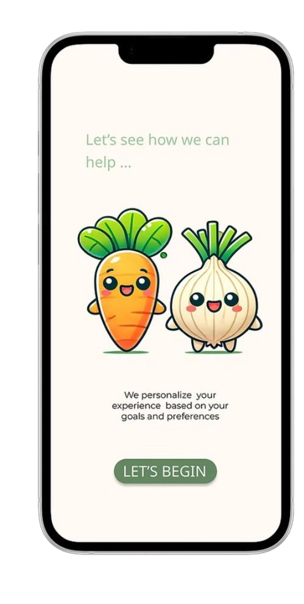
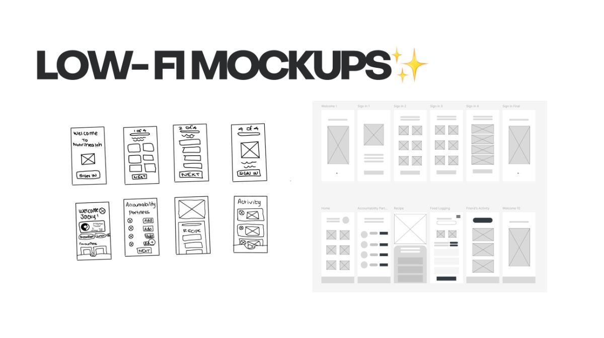
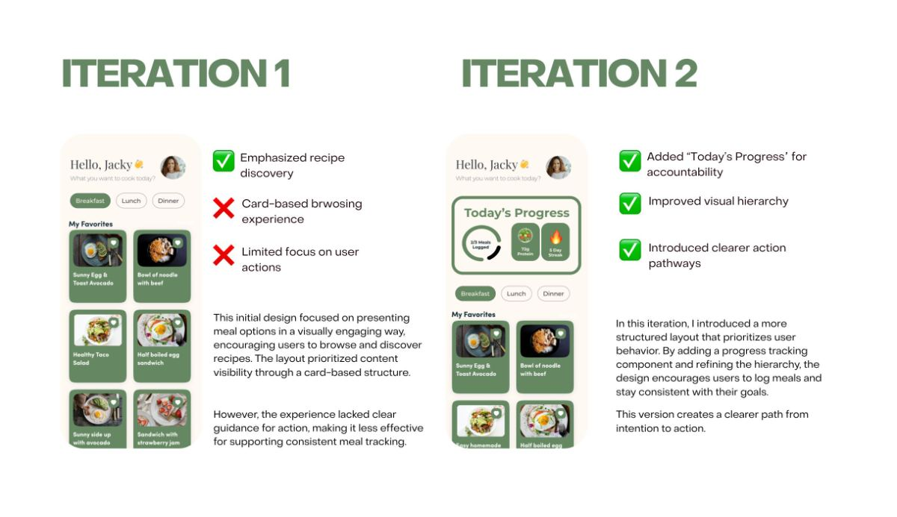
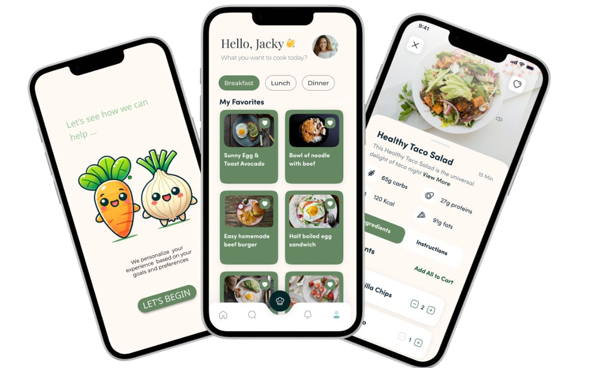

NutriHealth
A nutrition app that helps college students build better eating habits through simple food logging, recipe organization, and supportive, approachable UX design.


A nutrition app for college students, built from the problem I was living
Maintaining a healthy diet as a college student often feels overwhelming with a busy schedule. Many of my friends and I relied on fast food, skipped meals, or felt unmotivated to make healthier choices. I surveyed 50 students, interviewed 16 of my peers, and designed NutriHealth around the three things that actually stopped them.
{{ s.b }}
College students struggle to maintain healthy eating habits
Maintaining a healthy diet as a college student often feels overwhelming with a busy schedule. Many of my friends and I relied on fast food, skipped meals, or felt unmotivated to make healthier choices.
The three challenges the design had to hold at once.

How can we simplify meal planning, encourage better eating habits, and create a community around food amongst busy college students?
Existing apps fell short on affordability, time, and connection
After doing some preliminary white paper research, drawing from journals, articles and websites on some of the best ways to achieve a healthy and balanced diet with regards to college students in particular, I found an eye opening statistic.
Nearly 25% of college students experience food insecurity, leading to skipped meals and insufficient nutrition, which can adversely affect academic performance and overall well-being.
According to a study by the Dominican University of California, “individuals who write down their goals and share progress updates with a supportive network have a 65% higher success rate in achieving their goals”.
I conducted a survey with 50 college students and reviewed existing food apps. While these apps provided valuable tools, they often fell short in areas critical to college students, such as affordability, time-efficiency, and social connection.
{{ c.body }}
{{ c.note }}
From affinity mapping the survey responses, three key insights emerged
I interviewed 16 of my peers
I conducted interviews and surveys amongst students who struggled with maintaining healthy eating habits. These users expressed frustration with meal planning, grocery shopping, and finding the motivation to cook regularly.
Students need tools that make healthy eating feel simple, fast, and approachable.


Three themes, and the design challenge each one set
{{ t.o }}
{{ t.c }}
The questions the app has to answer for a student mid-semester
From paper sketches to a full screen library


Three features that turn intention into routine
{{ r.t }}
Poppins, a soft green palette, and two vegetable companions

Adding “Today's Progress” created a clearer path from intention to action

Key takeaways
{{ r }}
